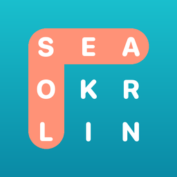

Quiet Words
Word search for grown-ups, calm and honest, for iPhone, iPad and Mac.
Find the words of a theme hidden in a grid of letters, from oceans and coffee to music and the 20th century. Every letter belongs to a word except a few: the leftover letters spell one more word of the theme. Play with English or Spanish words, whatever language your device speaks.
- No ads. No purchases. No subscriptions.
- No data collected: no accounts, no analytics, no tracking.
- Eleven themes written by hand, with words from all over the world.
- A hidden word in every puzzle.
- A new daily challenge for everyone, in English and in Spanish.
- An album of every word you find, with definitions from your device's dictionary.
- Game Center leaderboards and achievements, if you want them. Works fully offline.
Quiet Words
Sopa de letras para adultos, tranquila y honesta, para iPhone, iPad y Mac.
Encuentra las palabras de un tema escondidas en una cuadrícula de letras, del océano y el café a la música y el siglo XX. Cada letra es parte de una palabra menos unas pocas: las letras que sobran forman una palabra más del tema. Juega con palabras en inglés o en español, hable el idioma que hable tu dispositivo.
- Sin anuncios. Sin compras. Sin suscripciones.
- No recolecta datos: sin cuentas, sin analytics, sin rastreo.
- Once temas escritos a mano, con palabras de todas partes del mundo.
- Una palabra oculta en cada sopa.
- Un reto diario nuevo para todos, en inglés y en español.
- Un álbum con cada palabra que encuentras, con definiciones del diccionario de tu dispositivo.
- Clasificaciones y logros de Game Center, si los quieres. Funciona completamente sin conexión.